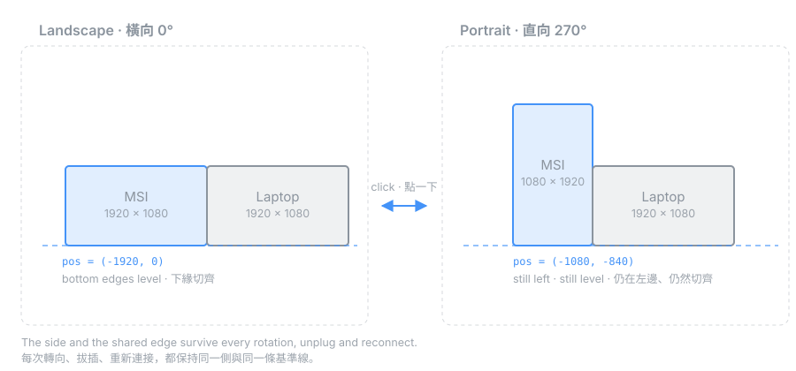

One click in the Windows tray flips your portable monitor between landscape and portrait — and it stays exactly where you put it. 在 Windows 工作列點一下，攜帶式螢幕就在橫向與直向之間切換 —— 而且位置不會跑掉。
Rotating changes the shape — the side and the bottom edge stay put. 轉向只改變形狀 —— 所在的那一側與下緣基準線維持不變。
Portable USB-C monitors are great in portrait mode. But most have no orientation sensor, so Windows will never auto-rotate them — you open Settings → System → Display and change the dropdown, every single time. 攜帶式 USB-C 螢幕轉成直向非常好用，但這類螢幕大多沒有方向感應器，Windows 永遠不會幫它自動旋轉 —— 你只能每次都打開「設定 → 系統 → 顯示器」改下拉選單。
And then Windows moves it. Rotating 1920×1080 to 1080×1920 changes the monitor's shape, so Windows reflows the desktop and drops it somewhere new. Set it on the left, level with your laptop; after one rotation it floats half a screen too high. 然後 Windows 會把它搬走。1920×1080 轉成 1080×1920，形狀變了，Windows 就重排桌面把它丟到別處。你明明擺在左邊、跟筆電切齊，轉一次就飄到半個螢幕高的位置。

Click the tray icon to toggle. The icon itself shows the current orientation.點工作列圖示就切換，圖示本身會顯示目前方向。
Keeps its side and stays flush against the shared edge, through every rotation.維持在同一側並緊貼共用邊，每次轉向都一樣。
Reconnect and both the monitor and the tray icon return to the same place.重新接上，螢幕與工作列圖示都回到原本的位置。
No more pointer warping to the centre of the primary screen.不再被拉到主螢幕正中央。
English or Chinese UI, following Windows. A named pipe lets anything drive it.英文或中文介面，跟隨系統語言。另有 named pipe 可供任何程式驅動。
A single 28 KB .exe. No installer, no telemetry, no network access.單一 28 KB 執行檔。免安裝、無遙測、不連網。
Windows keys a tray icon's remembered position on its identity. WinForms' NotifyIcon uses (hWnd, uID) — both change every launch, so Windows sees a new icon each time and dumps it in the overflow. Calling Shell_NotifyIcon with a fixed NIF_GUID is what makes the position stick.
Windows 記住托盤圖示位置的依據是它的「身分」。WinForms 的 NotifyIcon 使用 (hWnd, uID)，兩者每次啟動都會變，所以系統每次都當成新圖示丟回溢位區。直接呼叫 Shell_NotifyIcon 並帶固定的 NIF_GUID，位置才會被記住。
Under NOTIFYICON_VERSION_4 one left click sends WM_MOUSEMOVE → WM_LBUTTONDOWN → WM_LBUTTONUP → NIN_SELECT. Handle both the raw message and NIN_SELECT and your toggle rotates then instantly rotates back — the app looks dead while doing its job perfectly, twice.
在 NOTIFYICON_VERSION_4 底下，按一次左鍵會送出 WM_MOUSEMOVE → WM_LBUTTONDOWN → WM_LBUTTONUP → NIN_SELECT。原始訊息和 NIN_SELECT 都接，切換就會轉過去又轉回來 —— 程式看起來毫無反應，其實完美地做了兩次。
Rotating changes width and height, so Windows reflows the desktop to remove the overlap it just created. Both go into one DEVMODE, staged with CDS_NORESET and committed in a single call. Hotplug needs more: Windows parks the monitor arbitrarily and may reflow again after you act, so geometry is only trusted once it has held still.
轉向會改變寬高，Windows 會為了消除它剛製造的重疊而重排桌面。所以兩者放進同一個 DEVMODE，用 CDS_NORESET 暫存後一次提交。熱插拔更麻煩：Windows 會把螢幕停在任意位置，而且在你動作之後還會再重排一次，因此幾何資料必須靜止一段時間才被採信。
A zero-risk test, no code required: turn the monitor to portrait and open its OSD menu. If the on-screen menu rotates to stay upright, a G-sensor is driving the scaler. If it lies on its side, there isn't one. 一個零風險、不用寫程式的測試：把螢幕轉成直向，然後叫出它的 OSD 選單。如果選單跟著轉正，代表有 G-sensor 在驅動 scaler；如果選單是躺著的，就沒有。
The repository documents the full check — Windows sensor stack, HID report descriptors (usage page 0x20), and the DDC/CI capability string (VCP 0xAA).
Repo 裡記錄了完整的檢測方法 —— Windows 感應器堆疊、HID 報告描述元（usage page 0x20）、以及 DDC/CI capability 字串（VCP 0xAA）。